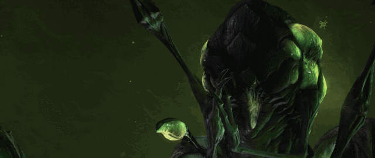
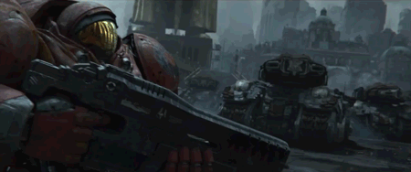

SC2D: Starcraft Drawn
Bringing RTS to CCG, SC2D is an ambitious card game to convert the CCG genre into an RTS-paced feel.
Calculated Spontaneity

Taking turns isn't anything new to gaming. Neither is interacting with an opponent simultaneously. Sequential action matching the race of reaction, though? That is quite the calculated thrill. Finding that formula lets you feel the pressure of out-manuevering your opponent while maintaining the control that comes from the natural pauses of placing and manipulating cards.
Calling in the Commanders

With only three races, there is valid concern to limitation in what card pools and race identities can expand upon. With Commanders, these issues fade away into intricate playstyles interwoven into the core feel of a race and its trademark combat. Keeping the nuance of deckbuilding was essential for us to enable the player to find the niche deck they love to pilot and surprise their opponent with.
Core Flow Matters
 Though there are two different feelings of pace being merged into one, you don't have to feel concerned about one dominating the other. Keeping the timing and precision of RTS in the format of a CCG allows both playerbases to feel the highs of their genres being rewarded. You can never sleep on what your opponent is doing or what they can do next. Being vigilant provides a strong advantage while patience lends a sense of insecurity for the opposing player, so be weary in the possibilities locked behing the fog of war and the backs of the opponents cards.
Though there are two different feelings of pace being merged into one, you don't have to feel concerned about one dominating the other. Keeping the timing and precision of RTS in the format of a CCG allows both playerbases to feel the highs of their genres being rewarded. You can never sleep on what your opponent is doing or what they can do next. Being vigilant provides a strong advantage while patience lends a sense of insecurity for the opposing player, so be weary in the possibilities locked behing the fog of war and the backs of the opponents cards.